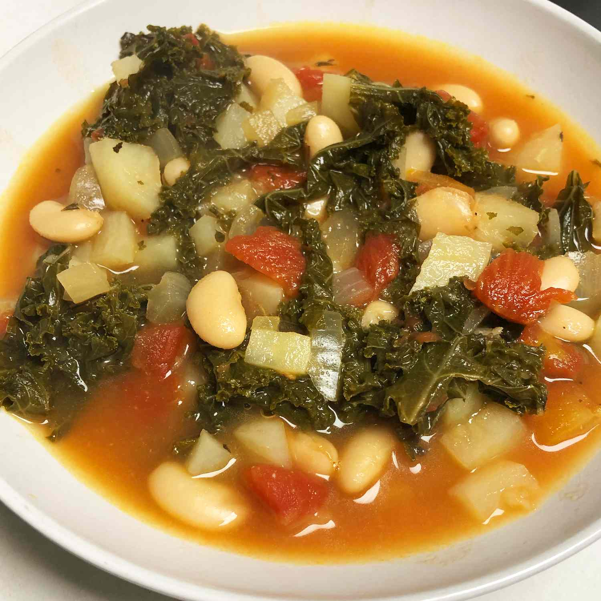

Kale soup

Description
This vegetarian kale soup with dark green kale, potatoes, and
cannellini beans will delight your taste buds and warm you up on
a cold winter night.
Ingredients
- 2 tablespoons olive oil
- 1 yellow onion, chopped
- 2 tablespoons chopped garlic
- 1 bunch kale, stems removed and leaves chopped
- 8 cups water
- 6 white potatoes, peeled and cubed
- 2 (15 ounce) cans cannellini beans (drained if desired)
- 1 (15 ounce) can diced tomatoes
- 6 cubes vegetable bouillon (such as Knorr)
- 2 tablespoons dried parsley
- 1 tablespoon Italian seasoning
- salt and pepper to taste
Steps
- Heat olive oil in a large soup pot over medium-high heat; cook onion and garlic until soft, 2 to 3 minutes. Stir in kale and cook until wilted, about 2 minutes. Stir in water, potatoes, beans, tomatoes, vegetable bouillon, parsley, and Italian seasoning.
- Bring to a boil, then reduce heat and simmer until potatoes are cooked through, about 25 minutes. Season with salt and pepper.